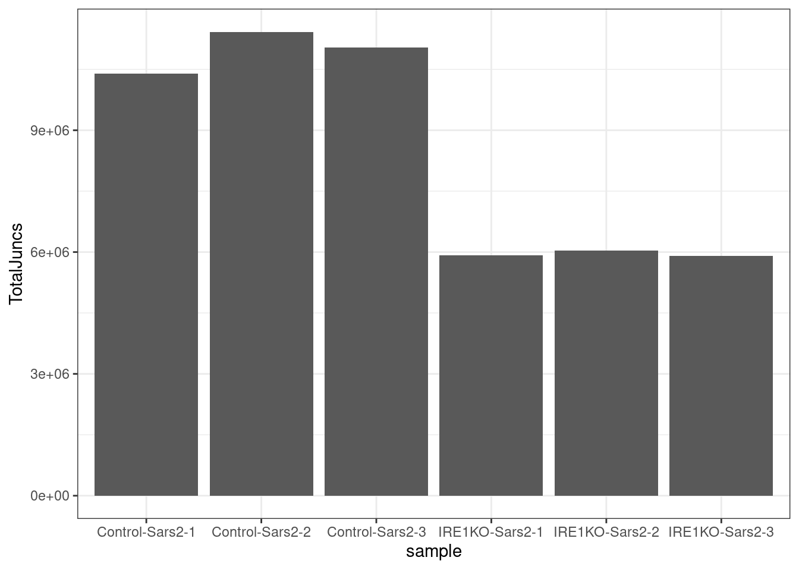
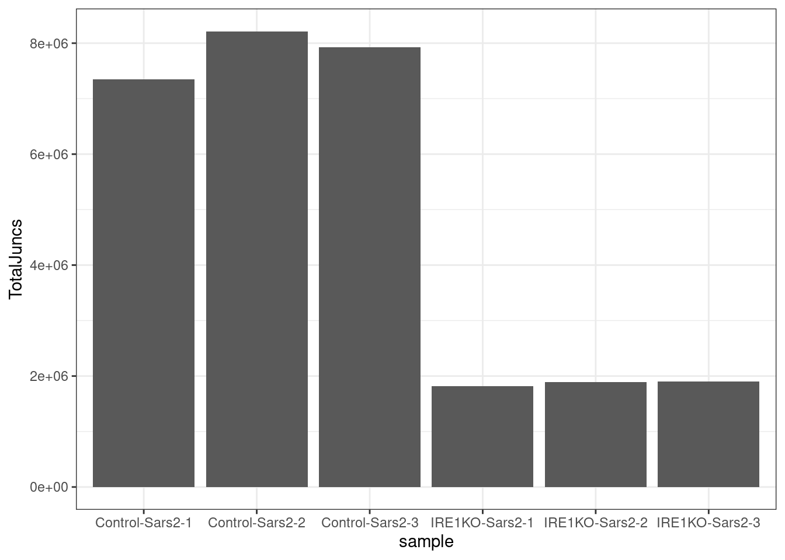
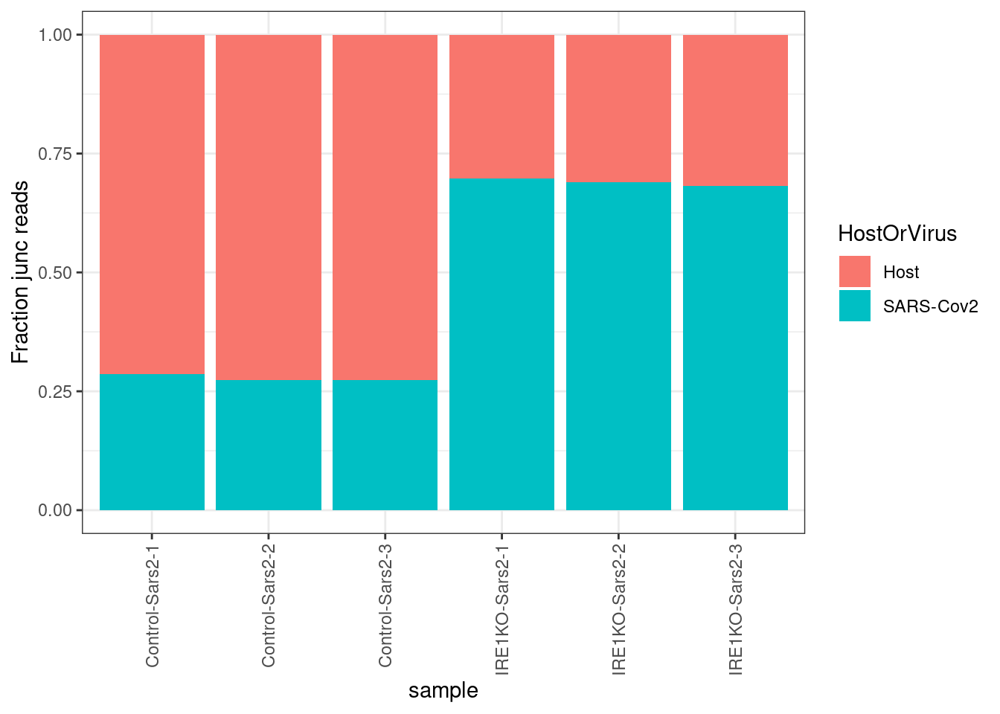
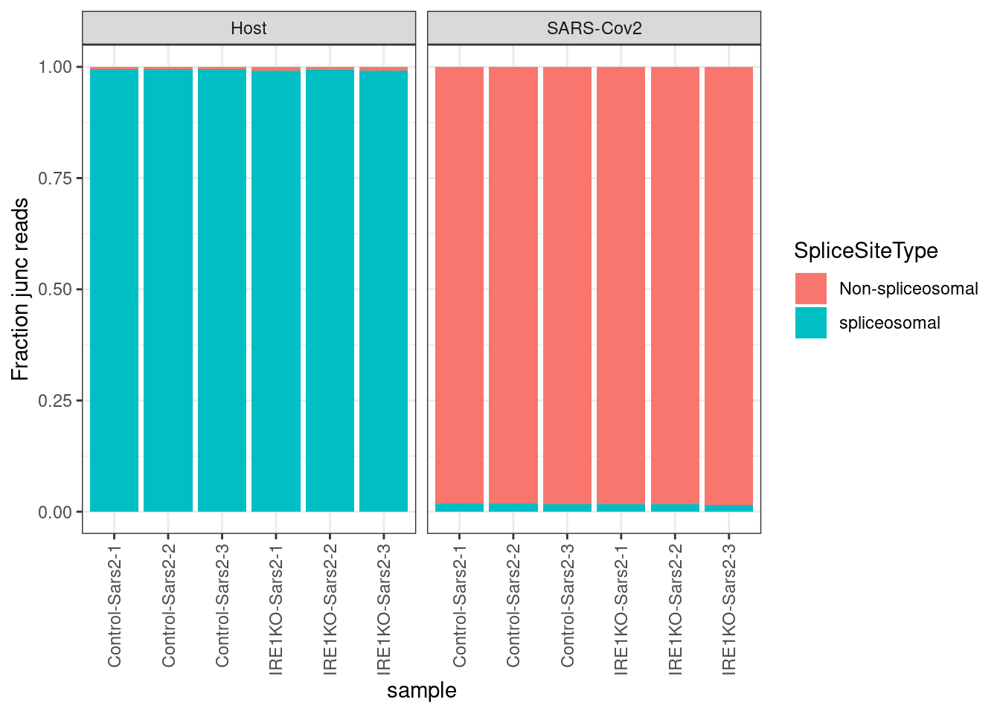
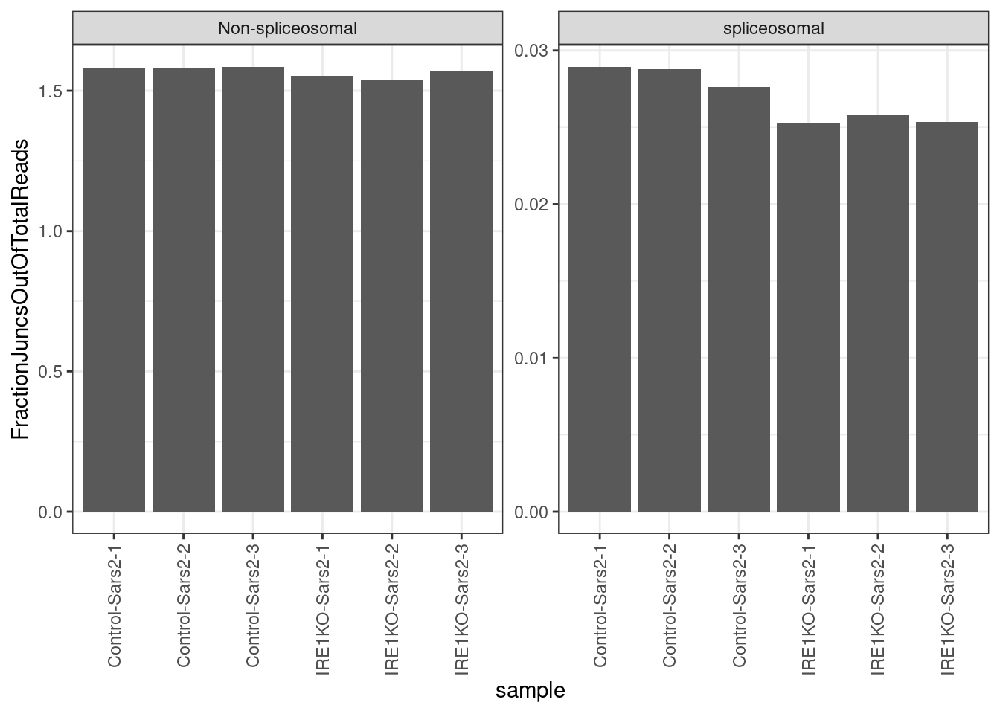

Last updated: 2022-03-29
Checks: 6 1
Knit directory: ire1_sars/analysis/
This reproducible R Markdown analysis was created with workflowr (version 1.6.2). The Checks tab describes the reproducibility checks that were applied when the results were created. The Past versions tab lists the development history.
The R Markdown file has unstaged changes. To know which version of the R Markdown file created these results, you’ll want to first commit it to the Git repo. If you’re still working on the analysis, you can ignore this warning. When you’re finished, you can run wflow_publish to commit the R Markdown file and build the HTML.
Great job! The global environment was empty. Objects defined in the global environment can affect the analysis in your R Markdown file in unknown ways. For reproduciblity it’s best to always run the code in an empty environment.
The command set.seed(19900924) was run prior to running the code in the R Markdown file. Setting a seed ensures that any results that rely on randomness, e.g. subsampling or permutations, are reproducible.
Great job! Recording the operating system, R version, and package versions is critical for reproducibility.
Nice! There were no cached chunks for this analysis, so you can be confident that you successfully produced the results during this run.
Great job! Using relative paths to the files within your workflowr project makes it easier to run your code on other machines.
Great! You are using Git for version control. Tracking code development and connecting the code version to the results is critical for reproducibility.
The results in this page were generated with repository version c4d98f2. See the Past versions tab to see a history of the changes made to the R Markdown and HTML files.
Note that you need to be careful to ensure that all relevant files for the analysis have been committed to Git prior to generating the results (you can use wflow_publish or wflow_git_commit). workflowr only checks the R Markdown file, but you know if there are other scripts or data files that it depends on. Below is the status of the Git repository when the results were generated:
Ignored files:
Ignored: .DS_Store
Ignored: .Rproj.user/
Ignored: ._.DS_Store
Ignored: code/.DS_Store
Ignored: code/.Snakefile.swp
Ignored: code/._.DS_Store
Ignored: code/.snakemake/
Ignored: code/Ref/
Ignored: code/bams/
Ignored: code/idxstats/
Ignored: code/juncs/
Ignored: code/logs/
Untracked files:
Untracked: output/Galaxy36-Control-Sars2-1.annotated.bed.gz
Untracked: output/Galaxy39-Control-Sars2-2.annotated.bed.gz
Untracked: output/Galaxy42-Control-Sars2-3.annotated.bed.gz
Untracked: output/Galaxy54-IRE1KO-Sars2-1.annotated.bed.gz
Untracked: output/Galaxy57-IRE1KO-Sars2-2.annotated.bed.gz
Untracked: output/Galaxy60-IRE1KO-Sars2-3.annotated.bed.gz
Untracked: output/TotalReadsPerChrom.tsv
Unstaged changes:
Modified: analysis/ExploreJuncTable.Rmd
Modified: code/Snakefile
Note that any generated files, e.g. HTML, png, CSS, etc., are not included in this status report because it is ok for generated content to have uncommitted changes.
These are the previous versions of the repository in which changes were made to the R Markdown (analysis/ExploreJuncTable.Rmd) and HTML (docs/ExploreJuncTable.html) files. If you’ve configured a remote Git repository (see ?wflow_git_remote), click on the hyperlinks in the table below to view the files as they were in that past version.
| File | Version | Author | Date | Message |
|---|---|---|---|---|
| Rmd | c4d98f2 | Benjmain Fair | 2022-03-29 | initial commit |
| html | c4d98f2 | Benjmain Fair | 2022-03-29 | initial commit |
Letita and Long are interested in the hyptothesis that SARS-Cov2 genome may have decoy Ire1 binding/splice sites to out-compete Ire-1-dependent non-canonical splicing of Xbp1 which is involved in innate immune response signalling. They have infected WT or IRE1-KO cells with SARS-Cov2, and performed stranded RNA-seq, and are interested in exploring potential Ire-1 dependent splice sites, particularly on SAR-Cov2 RNA. I have tabulated their splice junction alignments from their bam files with regtools juntions extract and regtools junctions annotate using the rules described the snakefile. Here I will quickly explore the results before presenting them to Letita and Long.
first let’s load some R libraries
library(tidyverse)── Attaching packages ────────────────────────────────── tidyverse 1.3.0 ──✓ ggplot2 3.3.5 ✓ purrr 0.3.4
✓ tibble 2.1.3 ✓ dplyr 0.8.3
✓ tidyr 1.1.0 ✓ stringr 1.4.0
✓ readr 1.3.1 ✓ forcats 0.4.0── Conflicts ───────────────────────────────────── tidyverse_conflicts() ──
x dplyr::filter() masks stats::filter()
x dplyr::lag() masks stats::lag()Now let’s read in the tabulated junction files. You can download the repository yourself and get these junction files:
git clone git@github.com:bfairkun/ire1-sars.git,
then change to the analysis directory, and try running this code:
junc_files <- list.files("../output", pattern="*.bed.gz", full.names = T) %>%
setNames(nm=str_replace(., ".+?-(.+?-Sars2-.+?)\\.annotated.bed.gz", "\\1"))
junc_files Control-Sars2-1
"../output/Galaxy36-Control-Sars2-1.annotated.bed.gz"
Control-Sars2-2
"../output/Galaxy39-Control-Sars2-2.annotated.bed.gz"
Control-Sars2-3
"../output/Galaxy42-Control-Sars2-3.annotated.bed.gz"
IRE1KO-Sars2-1
"../output/Galaxy54-IRE1KO-Sars2-1.annotated.bed.gz"
IRE1KO-Sars2-2
"../output/Galaxy57-IRE1KO-Sars2-2.annotated.bed.gz"
IRE1KO-Sars2-3
"../output/Galaxy60-IRE1KO-Sars2-3.annotated.bed.gz" dat <- lapply(junc_files, read_tsv) %>%
bind_rows(.id="sample")Parsed with column specification:
cols(
chrom = col_character(),
start = col_double(),
end = col_double(),
name = col_character(),
score = col_double(),
strand = col_character(),
splice_site = col_character(),
acceptors_skipped = col_double(),
exons_skipped = col_double(),
donors_skipped = col_double(),
anchor = col_character(),
known_donor = col_double(),
known_acceptor = col_double(),
known_junction = col_double(),
gene_names = col_character(),
gene_ids = col_character(),
transcripts = col_character()
)
Parsed with column specification:
cols(
chrom = col_character(),
start = col_double(),
end = col_double(),
name = col_character(),
score = col_double(),
strand = col_character(),
splice_site = col_character(),
acceptors_skipped = col_double(),
exons_skipped = col_double(),
donors_skipped = col_double(),
anchor = col_character(),
known_donor = col_double(),
known_acceptor = col_double(),
known_junction = col_double(),
gene_names = col_character(),
gene_ids = col_character(),
transcripts = col_character()
)
Parsed with column specification:
cols(
chrom = col_character(),
start = col_double(),
end = col_double(),
name = col_character(),
score = col_double(),
strand = col_character(),
splice_site = col_character(),
acceptors_skipped = col_double(),
exons_skipped = col_double(),
donors_skipped = col_double(),
anchor = col_character(),
known_donor = col_double(),
known_acceptor = col_double(),
known_junction = col_double(),
gene_names = col_character(),
gene_ids = col_character(),
transcripts = col_character()
)
Parsed with column specification:
cols(
chrom = col_character(),
start = col_double(),
end = col_double(),
name = col_character(),
score = col_double(),
strand = col_character(),
splice_site = col_character(),
acceptors_skipped = col_double(),
exons_skipped = col_double(),
donors_skipped = col_double(),
anchor = col_character(),
known_donor = col_double(),
known_acceptor = col_double(),
known_junction = col_double(),
gene_names = col_character(),
gene_ids = col_character(),
transcripts = col_character()
)
Parsed with column specification:
cols(
chrom = col_character(),
start = col_double(),
end = col_double(),
name = col_character(),
score = col_double(),
strand = col_character(),
splice_site = col_character(),
acceptors_skipped = col_double(),
exons_skipped = col_double(),
donors_skipped = col_double(),
anchor = col_character(),
known_donor = col_double(),
known_acceptor = col_double(),
known_junction = col_double(),
gene_names = col_character(),
gene_ids = col_character(),
transcripts = col_character()
)
Parsed with column specification:
cols(
chrom = col_character(),
start = col_double(),
end = col_double(),
name = col_character(),
score = col_double(),
strand = col_character(),
splice_site = col_character(),
acceptors_skipped = col_double(),
exons_skipped = col_double(),
donors_skipped = col_double(),
anchor = col_character(),
known_donor = col_double(),
known_acceptor = col_double(),
known_junction = col_double(),
gene_names = col_character(),
gene_ids = col_character(),
transcripts = col_character()
)head(dat)# A tibble: 6 x 18
sample chrom start end name score strand splice_site acceptors_skipp…
<chr> <chr> <dbl> <dbl> <chr> <dbl> <chr> <chr> <dbl>
1 Contr… MN90… 85 15794 JUNC… 411 + GT-AG 0
2 Contr… MN90… 65 21552 JUNC… 106394 + CT-AA 0
3 Contr… MN90… 65 25381 JUNC… 147114 + CT-AC 0
4 Contr… MN90… 83 26251 JUNC… 20035 + CT-AC 0
5 Contr… MN90… 64 26468 JUNC… 150525 + TC-GG 0
6 Contr… MN90… 69 27041 JUNC… 40613 + AC-TC 0
# … with 9 more variables: exons_skipped <dbl>, donors_skipped <dbl>,
# anchor <chr>, known_donor <dbl>, known_acceptor <dbl>,
# known_junction <dbl>, gene_names <chr>, gene_ids <chr>,
# transcripts <chr>Now let’s explore the data a bit…
Sort of similar to normalizing data to the total number of mapped reads, let’s plot the total number of spliced reads and consider normalizing later results to a factor based on this.
dat %>%
group_by(sample) %>%
summarise(TotalJuncs = sum(score)) %>%
ggplot(aes(x=sample, y=TotalJuncs)) +
geom_col() +
theme_bw()
| Version | Author | Date |
|---|---|---|
| c4d98f2 | Benjmain Fair | 2022-03-29 |
Ok, so there are more total junc reads in the control samples than the IRE1KO. This could just be unequal sequencing depth, or biological differences in amount of IRE-dependent splicing consistent with our hypothesis. How about let’s replot that but just filter for spliceosomal (GT-AG) introns.
dat %>%
filter(splice_site == "GT-AG") %>%
group_by(sample) %>%
summarise(TotalJuncs = sum(score)) %>%
ggplot(aes(x=sample, y=TotalJuncs)) +
geom_col() +
theme_bw()
| Version | Author | Date |
|---|---|---|
| c4d98f2 | Benjmain Fair | 2022-03-29 |
Wow, now the opposite effect. The control samples have less spliceosome dependent splicing, so the previous plot isn’t due to just differences in total read depth. This is consistent with their hypothesis.
Another quick quality check is that Long mentioned that >90% of reads map to SARS cov2 contig. Let’s verify that by counting junctions mapping to chromosome versus SARS cov2 contig.
dat %>%
mutate(HostOrVirus = case_when(
chrom == "MN908947.3" ~ "SARS-Cov2",
TRUE ~ "Host"
)) %>%
group_by(sample, HostOrVirus) %>%
summarise(TotalJuncs = sum(score)) %>%
ggplot(aes(x=sample, y=TotalJuncs, fill=HostOrVirus)) +
geom_col(position="fill") +
theme_bw() +
ylab("Fraction junc reads") +
theme(axis.text.x = element_text(angle = 90, vjust = 0.5, hjust=1))
| Version | Author | Date |
|---|---|---|
| c4d98f2 | Benjmain Fair | 2022-03-29 |
Ok so IRE-KO has a much larger fraction of reads originating from SARS, consistent with impaired ability to fight off infection. This important to keep in mind for downstream analyses.
Let’s verify IRE1-dependent non-canonical splicing of a 26nt intron in xbp1.
dat %>%
filter(gene_names=="XBP1") %>%
mutate(len = end-start) %>%
filter( len < 30)# A tibble: 2 x 19
sample chrom start end name score strand splice_site
<chr> <chr> <dbl> <dbl> <chr> <dbl> <chr> <chr>
1 Contr… chr22 2.92e7 2.92e7 JUNC… 2 - CT-CA
2 Contr… chr22 2.92e7 2.92e7 JUNC… 8 - CT-CA
# … with 11 more variables: acceptors_skipped <dbl>, exons_skipped <dbl>,
# donors_skipped <dbl>, anchor <chr>, known_donor <dbl>,
# known_acceptor <dbl>, known_junction <dbl>, gene_names <chr>,
# gene_ids <chr>, transcripts <chr>, len <dbl>Ok, at least in these two control samples, but not in any of the IRE-KO samples I can see some splice junctions of a 26nt non-canonical intron. Cool.
Now let’s check fraction junc reads derived from non-spliceosomal introns (as determined by GT-AG or AT-AC, or GC-AG motifs at intron boundaries).
dat %>%
count(splice_site) %>%
arrange(desc(n))# A tibble: 257 x 2
splice_site n
<chr> <int>
1 GT-AG 1058938
2 CT-AC 68400
3 GC-AG 15753
4 AA-TT 12739
5 TT-AA 11214
6 AA-CA 11116
7 TT-TT 9783
8 AA-TA 8981
9 AT-TT 8653
10 AA-AA 8459
# … with 247 more rowsdat %>%
mutate(HostOrVirus = case_when(
chrom == "MN908947.3" ~ "SARS-Cov2",
TRUE ~ "Host"
)) %>%
mutate(SpliceSiteType = case_when(
splice_site %in% c("GT-AG", "AT-AC", "GC-AG") ~ "spliceosomal",
TRUE ~ "Non-spliceosomal"
)) %>%
group_by(sample, HostOrVirus, SpliceSiteType) %>%
summarise(TotalJuncs = sum(score)) %>%
ggplot(aes(x=sample, y=TotalJuncs, fill=SpliceSiteType)) +
geom_col(position="fill") +
theme_bw() +
ylab("Fraction junc reads") +
facet_wrap(~HostOrVirus) +
theme(axis.text.x = element_text(angle = 90, vjust = 0.5, hjust=1))
| Version | Author | Date |
|---|---|---|
| c4d98f2 | Benjmain Fair | 2022-03-29 |
Ok, so the splicing in the host genome is predominantly spliceosomal, as expected. In SARS-Cov2 its primarily non-spliceosomal. Which doesn’t necessarily surprise me. And also keep in mind that non-canonical splicing is indistinguishable from deletions compared to the reference genome. So some of the ‘non-canonical splicing’ may actual just be deletion variants from the SARS-Cov2 reference. What I think makes sense to look for is the number of canonical junctions in SARS-Cov2 normalized to the total number of SARS-Cov2 reads. I think we would need to do another command to get that total number of SARS-Cov2 reads per sample, perhaps using samtools idxstats see link. I already did that in the Snakefile.
TotalCountsPerChrom <- read_tsv("../output/TotalReadsPerChrom.tsv", col_names = c("chrom", "size", "counts", "x", "FN")) %>%
mutate(sample = str_replace(FN, ".+?-(.+?-Sars2-.+?)\\.txt", "\\1"))Parsed with column specification:
cols(
chrom = col_character(),
size = col_double(),
counts = col_double(),
x = col_double(),
FN = col_character()
)TotalCountsSARS <- TotalCountsPerChrom %>%
filter(chrom == "MN908947.3") %>%
select(sample, TotalCounts = counts)
TotalCountsSARS# A tibble: 6 x 2
sample TotalCounts
<chr> <dbl>
1 Control-Sars2-2 194448214
2 Control-Sars2-1 185141825
3 IRE1KO-Sars2-2 266115623
4 IRE1KO-Sars2-3 252758643
5 IRE1KO-Sars2-1 261692333
6 Control-Sars2-3 187376587Ok, consistent with the plot based on total splice junction counts, it is clear that the IRE1-KO samples hve more SARS Cov2 reads (though technically I did not normalize for total read depth here).
In any case, back to counting the total number of non-canonical splicing reads on SARS-Cov2 normalized to the total number of SARS Cov2 reads:
dat %>%
mutate(HostOrVirus = case_when(
chrom == "MN908947.3" ~ "SARS-Cov2",
TRUE ~ "Host"
)) %>%
filter(HostOrVirus == "SARS-Cov2") %>%
mutate(SpliceSiteType = case_when(
splice_site %in% c("GT-AG", "AT-AC", "GC-AG") ~ "spliceosomal",
TRUE ~ "Non-spliceosomal"
)) %>%
group_by(sample, SpliceSiteType) %>%
summarise(TotalJuncs = sum(score)) %>%
inner_join(TotalCountsSARS, by="sample") %>%
mutate(FractionJuncsOutOfTotalReads = TotalJuncs/TotalCounts*100) %>%
ggplot(aes(x=sample, y=FractionJuncsOutOfTotalReads)) +
geom_col() +
facet_wrap(~SpliceSiteType, scales = "free") +
theme_bw() +
theme(axis.text.x = element_text(angle = 90, vjust = 0.5, hjust=1))
It’s not clear to me that there is any more non-canonical splicing of SARS-Cov2 in IRE1-KO cells than in in WT. Maybe there are more spliceosomal reads, but those only make up a small small fraction of the total junctions on SAR-Cov2 so I’m not sure how meaningful that is.
If I knew more about IRE-dependent splicing (eg the intron sizes, the preferred motifs) then maybe I could be better about filtering for the introns that I believe to be truly IRE-dependent, and maybe I would see a signal. I’ll leave that for Letita and Long to consider and investigate further.
Another question I have about their hypothesis is if the model is that SARS-Cov2 inhibits Xbp1 splicing by outcompeting for Ire1, Ire1-dependent splicing isn’t necessary for this competition and all that needs to happen is Ire1 binding to SARSCov2 RNA (though granted, splicing is something we can observe with RNA-seq, so it made sense to look for splicing).
sessionInfo()R version 3.6.1 (2019-07-05)
Platform: x86_64-pc-linux-gnu (64-bit)
Running under: Scientific Linux 7.4 (Nitrogen)
Matrix products: default
BLAS/LAPACK: /software/openblas-0.2.19-el7-x86_64/lib/libopenblas_haswellp-r0.2.19.so
locale:
[1] LC_CTYPE=en_US.UTF-8 LC_NUMERIC=C
[3] LC_TIME=en_US.UTF-8 LC_COLLATE=en_US.UTF-8
[5] LC_MONETARY=en_US.UTF-8 LC_MESSAGES=en_US.UTF-8
[7] LC_PAPER=en_US.UTF-8 LC_NAME=C
[9] LC_ADDRESS=C LC_TELEPHONE=C
[11] LC_MEASUREMENT=en_US.UTF-8 LC_IDENTIFICATION=C
attached base packages:
[1] stats graphics grDevices utils datasets methods base
other attached packages:
[1] forcats_0.4.0 stringr_1.4.0 dplyr_0.8.3 purrr_0.3.4
[5] readr_1.3.1 tidyr_1.1.0 tibble_2.1.3 ggplot2_3.3.5
[9] tidyverse_1.3.0
loaded via a namespace (and not attached):
[1] tidyselect_1.1.0 xfun_0.8 haven_2.3.1 lattice_0.20-38
[5] colorspace_1.4-1 vctrs_0.3.1 generics_0.0.2 htmltools_0.3.6
[9] yaml_2.2.0 utf8_1.1.4 rlang_0.4.10 later_0.8.0
[13] pillar_1.4.2 withr_2.4.1 glue_1.3.1 DBI_1.1.0
[17] dbplyr_1.4.2 modelr_0.1.8 readxl_1.3.1 lifecycle_0.1.0
[21] munsell_0.5.0 gtable_0.3.0 workflowr_1.6.2 cellranger_1.1.0
[25] rvest_0.3.5 evaluate_0.14 labeling_0.3 knitr_1.23
[29] httpuv_1.5.1 fansi_0.4.0 broom_0.5.2 Rcpp_1.0.5
[33] promises_1.0.1 backports_1.1.4 scales_1.1.0 jsonlite_1.6
[37] farver_2.1.0 fs_1.3.1 hms_0.5.3 digest_0.6.20
[41] stringi_1.4.3 grid_3.6.1 rprojroot_2.0.2 cli_2.2.0
[45] tools_3.6.1 magrittr_1.5 crayon_1.3.4 whisker_0.3-2
[49] pkgconfig_2.0.2 xml2_1.3.2 reprex_0.3.0 lubridate_1.7.4
[53] rstudioapi_0.10 assertthat_0.2.1 rmarkdown_1.13 httr_1.4.1
[57] R6_2.4.0 nlme_3.1-140 git2r_0.26.1 compiler_3.6.1